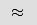

speecheditor
GUI text-based speech and music editor for creating radio/audio stories
Basic interface usage
The content-based audio editor allows users to edit audio stories that take advantage of the content of speech and music.
Basics
- Press
enteror click to render the current timeline. - Press
space baror click to play the current timeline. This will (usually) force a re-render if necessary, but it's occasionally buggy so I'd recommend rendering first (
to play the current timeline. This will (usually) force a re-render if necessary, but it's occasionally buggy so I'd recommend rendering first (enter) - Scrub by clicking in the timeline.
Speech editing
- You can select, delete, copy, and paste the text as normal.
- Pasted text will appear chronologically in the transcript (even if you paste text from Speaker A into a text box of Speaker B).
Advanced speech editing
- Press
.to insert a pause/breath to split up a sentence. - To insert a pause, type in a value and press the
insert pausebutton -
- To see to complete, original transcript, click on the speech library tab on the side of the window, or press
r. You can copy, paste, delete in here and from here too. - Press
eor to add an emphasis point after the current word. The current word is selected based on the cursor position in the text boxes.
to add an emphasis point after the current word. The current word is selected based on the cursor position in the text boxes.
Adding music
- Click the
Add Songbutton in the local music library, and select an song (mp3 format) from your computer. - Then click
Upload. This will take some time, as the server needs to analyze the music to enable the music editing tools.
Music editing
- Press the plus button next to a song in the local Music Library to add it to the timeline. Songs in the timeline can be moved by clicking and dragging on the top bar. A song can be shortened by clicking and dragging on the song's left and right edges.
- If a song has been clipped to a short segment and a loop has been detected, click
 to add a loop.
to add a loop.
Adding musical underlays
- First, make sure the song you want to use is in the local Music Library but is not in the timeline. To remove a song from the timeline, click the
xin the top-right corner of the track. - Press
uor click on an emphasis point in the timeline () to open the underlay creation dialog.- Select a first (required) and second (optional) speech emphasis point.
- Select a song
- Press
Create(this will be very fast for a single emphasis point; it will be quadratic in the length of the song for multiple change points)
Other shortcuts, features, and quirks
wandsmove the cursor up and down between paragraphs in the text boxes.- The
Music Volumebutton allows for global adjustments to the music. This is a hack, but can be useful when generated underlays are too loud or too soft. - Make sure to re-render after all changes!
- Press
 to download the current composition as an mp3.
to download the current composition as an mp3. - Press
 to start a new composition with one of the other speech tracks.
to start a new composition with one of the other speech tracks. - The
Clear wordsbutton clears all of the words from the timeline/transcript view. Sometimes it's nice to start fresh. If you do this, it's sometimes tricky to see where you can paste words; one of the two columns of the transcript view will still contain a text box! Hover right beneath the speaker names until you see the cursor change, then click and paste.
Music browsing (If you have the music browser installed and enabled)
- Click the music browser tab on the right side of the window or press
fto open the music browser. - The emotion buttons filter the song table by emotion (coarsely). Once an emotion is selected, click it again to clear that filter.
- The features buttons toggle addition columns of the song table
- The play button for each song plays a clip centered around the a music change point in that song.
- Press  to filter by the song's nearest timbral neighbors. Press the
xin the red box to clear this filter. - Press the plus button by a song to add it to your local music library.